About Me
Hi! I’m Khashayar (or simply Khay), an E/E Systems Engineer and independent iOS developer based in
Düsseldorf, Germany. My work sits at the intersection of embedded software, ADAS validation, and
technical project delivery — from hands-on C++ development to system-level performance analysis and
product ownership of a central test framework. I hold two M.Sc. degrees in Electrical Engineering
(Computer Engineering) and Economics (General Management), as well as a B.Sc. in Electrical Engineering,
from RWTH Aachen University. Alongside my engineering career, I design, publish, and maintain my own apps
across the Apple ecosystem.
Career
-
E/E Systems Engineer | ADAS at Mercedes-Benz AG
Full-time · Jul. 2023 – present · Stuttgart, Germany
Technical project delivery grounded in hands-on engineering, with responsibility spanning embedded
software, full-stack ADAS performance, and software integration quality.
-
Current — Product Owner & Repository Maintainer, ADAS test framework:
Own the roadmap, prioritization, and technical evolution of a central framework used for smoke and
regression testing before integration and for broader evaluation of OTA software candidates. Coordinate
contributions from teams in Germany and India, review code, support new tests and requirements, and keep
the test infrastructure operational.
-
Previously — Performance Governance, full ADAS stack:
Assessed performance budgets in defined driving scenarios, analyzed vehicle measurements down to kernel
and CPU-core level, translated findings into actionable defect tickets, and directed external engineering
support through production readiness.
-
Initial assignment — C++ development, ADAS communication:
Developed safety-relevant, performance-critical C++ software with colleagues in India to monitor and
convert signals exchanged between ECUs. Contributions from this work are deployed in Mercedes-Benz
production vehicles.
-
Software Developer | Test Automation at Mercedes-Benz AG
Part-time · Feb. 2022 – Mar. 2023 · Stuttgart, Germany
Developed Python tools and test frameworks to automate validation workflows for prototype vehicles.
-
Research Assistant | Machine Learning at RWTH Aachen University
Part-time · Jun. 2022 – Sep. 2022 · Aachen, Germany
Evaluated machine-learning models for animal-fibre classification in scanning electron microscope images at
the Institute of Imaging & Computer Vision.
-
Software Development | Intern & Working Student at Mercedes-Benz AG
Feb. 2021 – Sep. 2021 · Rastatt, Germany
Developed user interfaces and backend functions for control systems in a 24/7 production environment.
-
Research Intern | Autonomous Driving at Mercedes-Benz
Sep. 2019 – Apr. 2020 · Stuttgart, Germany
Developed simulation pipelines for polarimetric radar cross-section modelling using MATLAB, Python,
openEMS, and
MEEP.
-
Teaching & Mentoring at RWTH Aachen University
2017 – 2020 · Aachen, Germany
Teaching assistant for mathematical methods, computer science, and electrical engineering (2017–2019),
followed by mentoring international students in the BeBuddy program (2020).
Education
-
M.Sc. Electrical Engineering | Computer Engineering
RWTH Aachen University · 2019 – Mar. 2022 · Final grade 1.6
Master’s thesis on machine learning for animal-fibre identification in SEM images (grade 1.3).
-
M.Sc. Economics | General Management
RWTH Aachen University · Oct. 2020 – Jul. 2022 · Final grade 1.9
Completed alongside the engineering master’s; thesis on analytics of mobile-game consumption (grade 1.7).
-
B.Sc. Electrical Engineering
RWTH Aachen University · 2016 – 2019
Focus on information and communication technology; thesis on adaptive algorithms using an FPGA SoC
(grade 1.3).
Personal Projects
Since 2020, I have independently taken products from concept and implementation through App Store release and
ongoing maintenance across iPhone, iPad, Apple Watch, Apple TV, and iMessage. My portfolio includes newer
products such as BetterCast as well as Network Usage Monitor and
Steps Widgets, which have reached top chart positions in multiple countries.
Latest Apps
2026 · iPhone, iPad & Apple Watch
Ad-free podcast listening with on-device transcription, rule-based playback controls, and configurable playlists.
App Store · Details & privacy
2026 · iPhone & iPad
A science-informed companion for breaking unwanted habits, tracking recovery streaks, and understanding progress.
App Store
2026 · iPhone
Live GPS position, compass direction, and speed data in a clean interface for everyday and outdoor use.
App Store
2026 · Apple TV
An elegant weather station for the living room with current conditions, forecasts, and clear visual presentation.
App Store
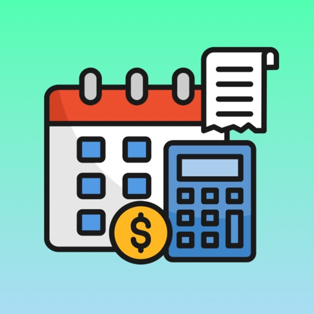
2024 · iPhone
A budgeting and fixed-cost calculator for understanding recurring expenses and planning monthly savings.
App Store
View the complete App Store portfolio
Selected App Highlights
-
Network Usage Monitor - An intuitive app for monitoring network conditions in real-time.
Developed in Jan. 2025
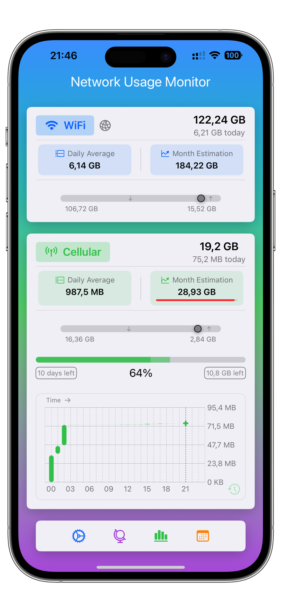
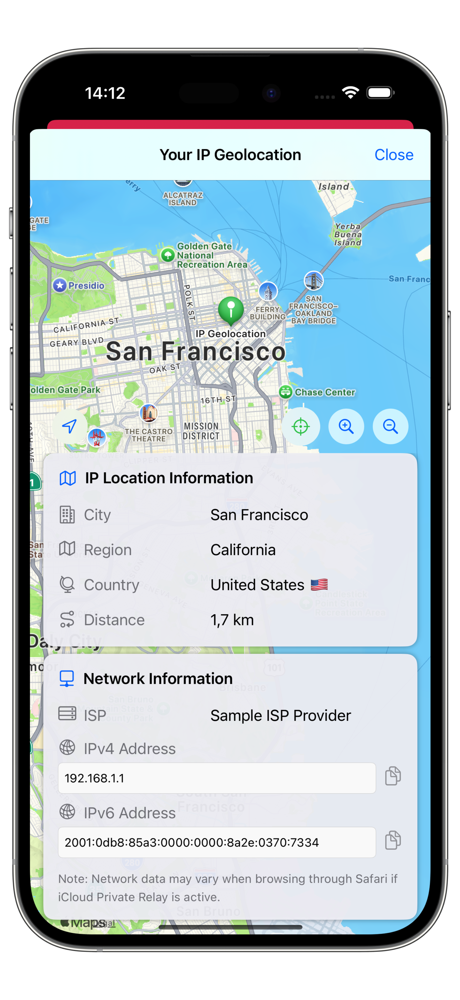
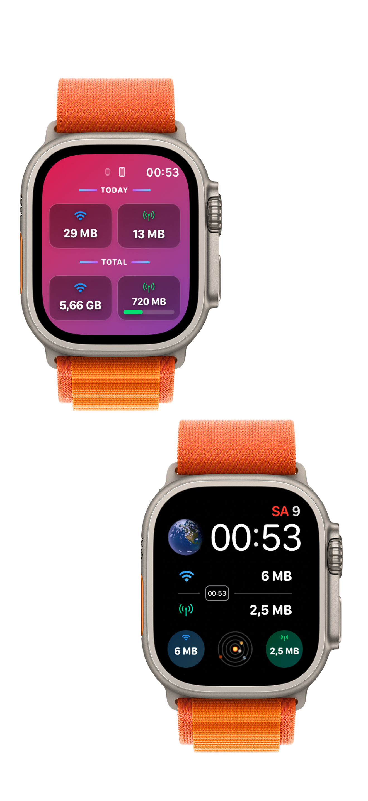
The app has reached the top of the Apple App Store charts in more than 13 countries. In Taiwan and Hong Kong in particular, it has gained a significant user base and positive reviews.

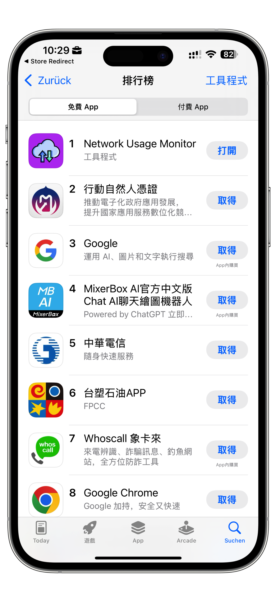
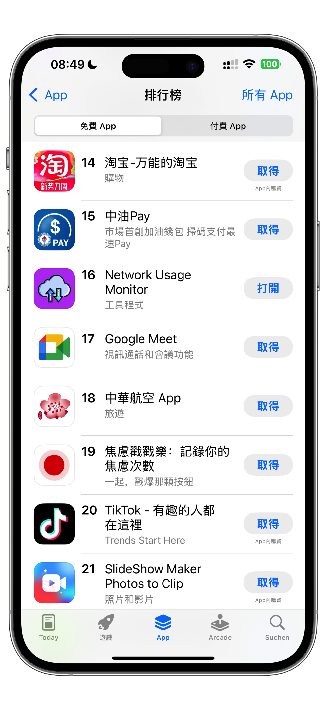
-
Steps Widgets - A set of customizable widgets to track your daily steps and fitness goals.
Developed in April 2021

The app integrates seamlessly with Apple Health to provide real-time step counts, distance traveled, and
calories burned. Users can choose from various widget styles and sizes to fit their home screen
preferences. The Steps Widgets app is well rated on the App Store and has got some of the top rankings in
different countries such as the US and Bulgaria in the Health & Fitness category.
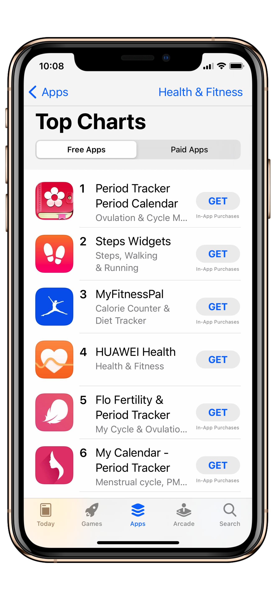
-
Deluxe Tasbih
Developed in Jan. 2021
An easy-to-use app designed to help users keep track of their daily prayers. Deluxe Tasbih features a digital tasbih counter, customizable main screen tools, and a variety of helpful widgets to enhance spiritual routine.
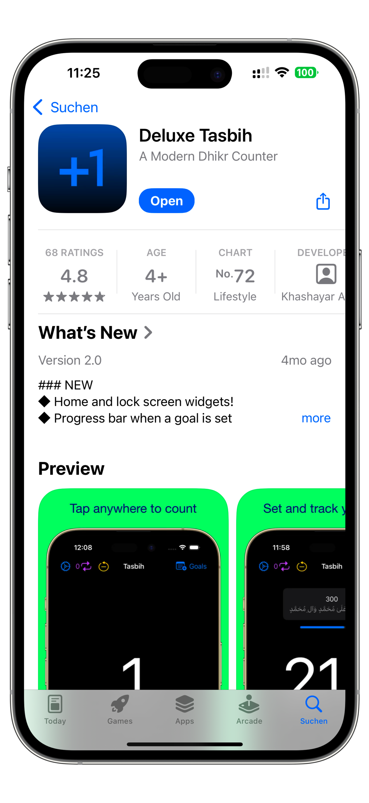
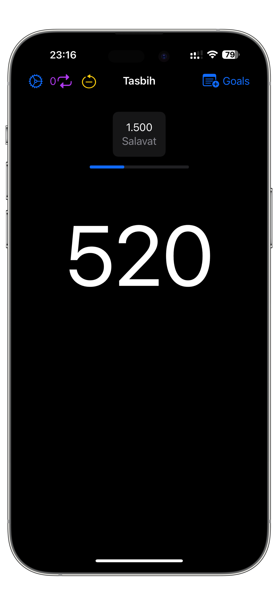
-
Daily Portfolio - A Stock Market Portfolio Tracker App
Developed in Aug. 2020
An open-source iOS app to manage your stock portfolio and analyze the markets using the Alpha Vantage database. The app allows users to track their portfolio entries both manually and automatically using historical stock prices. It provides real-time updates, a user-friendly interface, customizable alerts, and advanced charts to visualize portfolio performance.
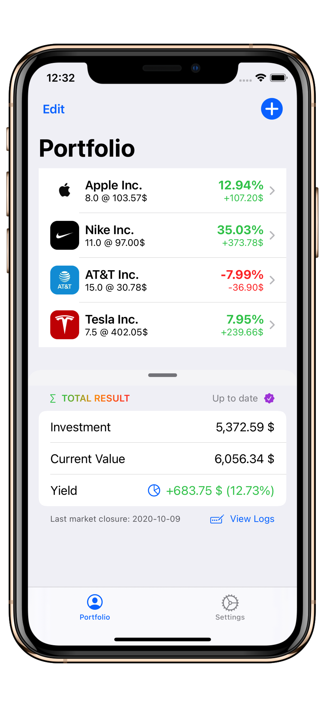
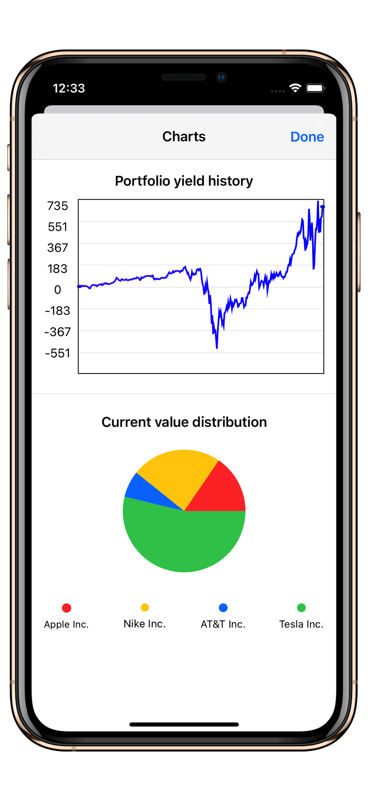
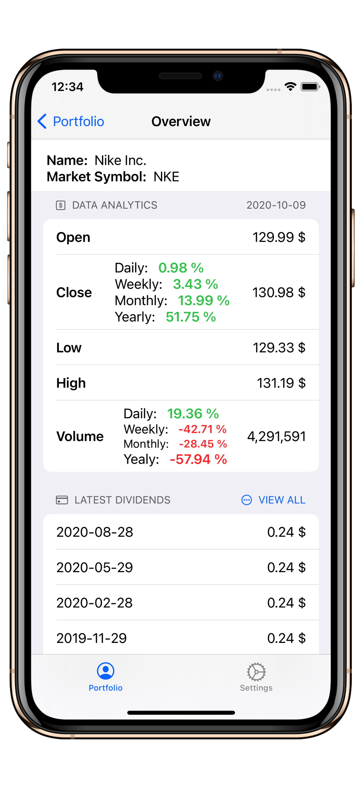
-
Leo the Cat
Developed in Nov. 2021
A cute iMessage sticker pack of Leo, a cute, stylish cat who loves to sleep and eat.
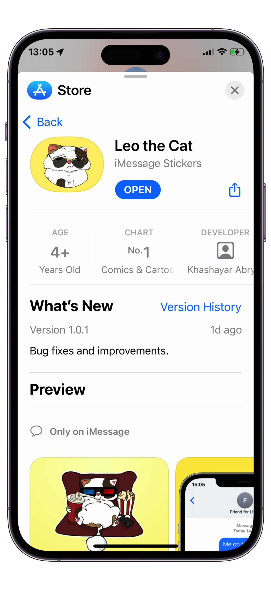
Bots and Python Automation
-
Dictionary Word Web Scraper – A Python script that scraped matching Persian translations for all German language words from online dictionaries.
-
Rental Home Telegram Bot – A Python-based Telegram bot that monitors popular rental listing platforms for new rental homes. As soon as new listings matching user-defined criteria (such as location, price, or number of rooms) appear, the bot sends instant notifications to a Telegram chat. This helped users (myself) stay updated and react quickly to new rental opportunities.
Reading Recommendations
Here are some of my favorite books and articles to read: